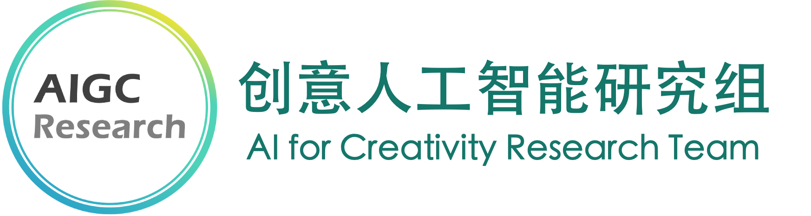
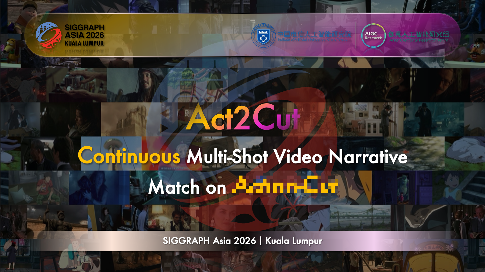

2026—now
Research Intern in Filmmaking and Video World Model
Ph.D.·Fudan University ｜ Founder·AIGC Research
From Creativity, Based Science, To Art
I am relatively stronger at 0-to-1 innovative research (creating new tasks).
本人相对来说更擅长偏 0-1 的创新型研究（开创新的任务）。
Open to collaboration
I am currently seeking research collaborations and industry internship opportunities in video generation and world models.
journeyzhuang@gmail.com ↗I received my Master degree in Computer Science at VRVC Lab, School of Information Science and Technology (SIST), ShanghaiTech University (supervised by Prof. Lan Xu and Ph.D. Li-ao Wang), and I am currently pursuing my Ph.D. in Computer Science at Fudan Generative Vision Lab (Fusion Lab), College of Computer Science and Artificial Intelligence (AICS) & Artificial Intelligence Innovation and Industry Institute (AI³), Fudan University (supervised by Prof. Siyu Zhu).
My research interests focus on AI+Art, including Image/Video/3D/4D AIGC, World Model, Computer Vision, Computer Graphics, Digital Media, Computational Photography, and Neuroscience. Currently, I primarily work on narrative filmmaking and neural signal-guided visual reconstruction, leading the AIGC Research｜AI for Creativity (AI4C) Team. AI4C Team is dedicated to Creative General Intelligence (CGI), exploring how AI can empower artistic creation and creative workflows, and investigating the nature of human creativity.
“I am running a WeChat Official Account, called AIGC Research, dedicated to comprehensively tracking academic frontiers in AIGC through the PaperDaily series. As of 2026.03.04, it has attracted more than 7,000 followers and maintained a rising trend, welcome your follow and support!
New!!我正在寻找视频生成与世界模型方向的工业界合作型实习机会（我有足够前沿的oral级创新点，以及丰富的工程经验），如果您欣赏我并愿意与我合作，欢迎随时通过电子邮件与我（或我博导）联系！
I am currently seeking collaborative industry internship opportunities in video generation and world models. I have sufficiently cutting-edge, oral-level innovations and rich engineering experience. If you are interested in my work and would like to collaborate, please feel free to contact me (or my Ph.D. advisor) via email!
Academic background
Researching creative intelligence.
Welcome to AIGC Research (AI4C Team) Homepage for more details.
Team Members: Cailin Zhuang (庄才林) (FDU), Yaoqi Hu (胡耀淇), Zheng Dong (董政), Yiming Guo (郭一铭) (SHU).
Team Mentors: Wei Cheng (程巍) (Stepfun), Qingling Xia (夏清玲) (CQUT), Siyu Zhu (朱思语) (FDU & SII), Mengtian Li (李梦甜) (Shanghai Film Academy, SHU).

Visit the team homepage ↗Where research meets practice.
Research Intern in Filmmaking and Video World Model
Research Intern in Video Generation (Multi-Shot Filmmaking)
Research Intern in Image Generation (Story Visualization)
Selected work
FDU · TeleAI · AIGC Research

Continuous Multi-Shot Video Narrative
ShanghaiTech · StepFun · AIGC Research

Story visualization aims to generate coherent image sequences that faithfully represent a narrative and match given character references. Despite progress in generative models, existing benchmarks remain narrow in scope, often limited to short prompts, lacking character references, or single-image cases, failing to reflect real-world narrative complexity and obscuring true model performance.
We introduce ViStoryBench, a comprehensive benchmark designed to evaluate story visualization models across varied narrative structures, visual styles, and character settings. It features richly annotated multi-shot scripts derived from curated stories spanning literature, film, and folklore. Large language models assist in story summarization and script generation, with all outputs verified by humans for coherence and fidelity. Character references are carefully curated to maintain consistency across different artistic styles.
ViStoryBench proposes a suite of multi-dimensional automated metrics to evaluate character consistency, style similarity, prompt alignment, aesthetic quality, and artifacts like copy-paste behavior. These metrics are validated through human studies and used to assess a broad range of open-source and commercial models, enabling systematic analysis and encouraging advances in visual storytelling.
ShanghaiTech · Guangming Lab · StepFun · AIGC Research

Current 3D Gaussian Splatting stylization approaches are limited in their ability to represent diverse artistic styles, frequently defaulting to low-level texture replacement or yielding semantically inconsistent outputs. In this paper, we introduce StyleMe3D, a novel hierarchical framework that achieves comprehensive, high-fidelity stylization by disentangling multi-level style representations while preserving geometric fidelity. The cornerstone of StyleMe3D is Dynamic Style Score Distillation (DSSD), which harnesses latent priors from a style-aware diffusion model to provide high-level semantic guidance, ensuring robust and expressive style transfer. To further refine this distillation process, we propose a multi-modal alignment strategy using the CLIP latent space: a CLIP-based style stream evaluator (Contrastive Style Descriptor) that enforces middle-level stylistic similarity, and a CLIP-based content stream evaluator (3D Gaussian Quality Assessment) that acts as a global regularizer to mitigate typical GS quality degradation. Finally, a VGG-based Simultaneously Optimized Scale module is integrated to refine fine-grained texture details at the low-level. Extensive experiments demonstrate that StyleMe3D consistently preserves intricate geometric details and achieves coherent stylistic effects across entire scenes, significantly surpassing state-of-the-art baselines in both qualitative and quantitative evaluations.
Questions still unfolding.
multi-shot narrative generation
Video World Model
fMRI-guided Video Reconstruction